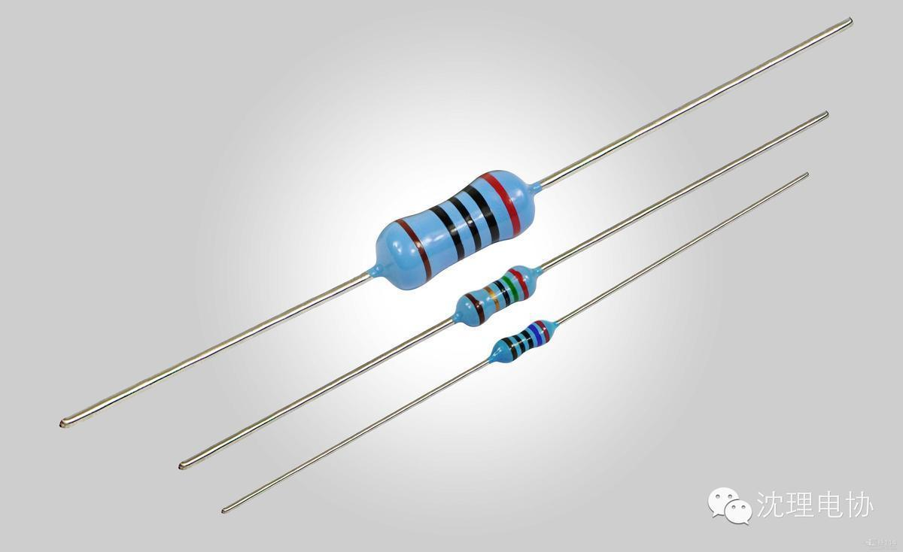

使用小程序

上拉电阻：
1、当TTL电路驱动COMS电路时，如果TTL电路输出的高电平低于COMS电路的最低高电平（一般为3.5V），这时就需要在TTL的输出端接上拉电阻，以提高输出高电平的值。
2、OC门电路必须加上拉电阻，才能使用。
3、为加大输出引脚的驱动能力，有的单片机管脚上也常使用上拉电阻。
4、在COMS芯片上，为了防止静电造成损坏，不用的管脚不能悬空，一般接上拉电阻产生降低输入阻抗，提供泄荷通路。
5、芯片的管脚加上拉电阻来提高输出电平，从而提高芯片输入信号的噪声容限增强抗干扰能力。
6、提高总线的抗电磁干扰能力。管脚悬空就比较容易接受外界的电磁干扰。
7、长线传输中电阻不匹配容易引起反射波干扰，加上下拉电阻是电阻匹配，有效的抑制反射波干扰。
上拉电阻阻值的选择原则包括:
1、从节约功耗及芯片的灌电流能力考虑应当足够大；电阻大，电流小。
2、从确保足够的驱动电流考虑应当足够小；电阻小，电流大。
3、对于高速电路，过大的上拉电阻可能边沿变平缓。综合考虑
以上三点,通常在1k到10k之间选取。对下拉电阻也有类似道理
下拉电阻的设定的原则和上拉电阻是一样的。
OC门输出高电平时是一个高阻态，其上拉电流要由上拉电阻来提供，设输入端每端口不大于100uA,设输出口驱动电流约500uA，标准工作电压是5V，输入口的高低电平门限为0.8V(低于此值为低电平)；2V(高电平门限值)。
选上拉电阻时：
500uA x 8.4K= 4.2即选大于8.4K时输出端能下拉至0.8V以下，此为最小阻值，再小就拉不下来了。如果输出口驱动电流较大，则阻值可减小，保证下拉时能低于0.8V即可。
当输出高电平时，忽略管子的漏电流，两输入口需200uA
200uA x15K=3V即上拉电阻压降为3V，输出口可达到2V，此阻值为最大阻值，再大就拉不到2V了。选10K可用。COMS门的可参考74HC系列
设计时管子的漏电流不可忽略，IO口实际电流在不同电平下也是不同的，上述仅仅是原理，一句话概括为：输出高电平时要喂饱后面的输入口，输出低电平不要把输出口喂撑了（否则多余的电流喂给了级联的输入口，高于低电平门限值就不可靠了）
在数字电路中不用的输入脚都要接固定电平，通过1k电阻接高电平或接地。
1. 电阻作用：
l 接电组就是为了防止输入端悬空
l 减弱外部电流对芯片产生的干扰
l 保护cmos内的保护二极管,一般电流不大于10mA
l 上拉和下拉、限流
l 1. 改变电平的电位，常用在TTL-CMOS匹配
2. 在引脚悬空时有确定的状态
3.增加高电平输出时的驱动能力。
4、为OC门提供电流
l 那要看输出口驱动的是什么器件，如果该器件需要高电压的话，而输出口的输出电压又不够，就需要加上拉电阻。
l 如果有上拉电阻那它的端口在默认值为高电平你要控制它必须用低电平才能控制如三态门电路三极管的集电极，或二极管正极去控制把上拉电阻的电流拉下来成为低电平。反之，
l 尤其用在接口电路中,为了得到确定的电平,一般采用这种方法,以保证正确的电路状态,以免发生意外,比如,在电机控制中,逆变桥上下桥臂不能直通,如果它们都用同一个单片机来驱动,必须设置初始状态.防止直通!
2、定义：
l 上拉就是将不确定的信号通过一个电阻嵌位在高电平！电阻同时起限流作用！下拉同理！
l 上拉是对器件注入电流，下拉是输出电流
l 弱强只是上拉电阻的阻值不同，没有什么严格区分
l 对于非集电极（或漏极）开路输出型电路（如普通门电路）提升电流和电压的能力是有限的，上拉电阻的功能主要是为集电极开路输出型电路输出电流通道。
3、为什么要使用拉电阻：
l 一般作单键触发使用时，如果IC本身没有内接电阻，为了使单键维持在不被触发的状态或是触发后回到原状态，必须在IC外部另接一电阻。
l 数字电路有三种状态：高电平、低电平、和高阻状态，有些应用场合不希望出现高阻状态，可以通过上拉电阻或下拉电阻的方式使处于稳定状态，具体视设计要求而定！
l 一般说的是I/O端口，有的可以设置，有的不可以设置，有的是内置，有的是需要外接，I/O端口的输出类似与一个三极管的C，当C接通过一个电阻和电源连接在一起的时候，该电阻成为上C拉电阻，也就是说，如果该端口正常时为高电平，C通过一个电阻和地连接在一起的时候，该电阻称为下拉电阻，使该端口平时为低电平，作用吗：
比如：当一个接有上拉电阻的端口设为输如状态时，他的常态就为高电平，用于检测低电平的输入。
l 上拉电阻是用来解决总线驱动能力不足时提供电流的。一般说法是拉电流，下拉电阻是用来吸收电流的，也就是你同学说的灌电流
关注沈理电协（微信：sylgdzxh）
每一次转发和分享都是对我们的肯定。